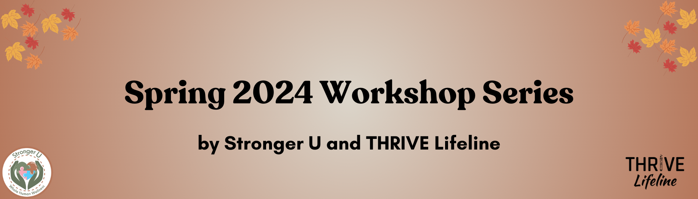

Upcoming Workshop Schedule

THRIVE Lifeline and Stronger U are partnering to provide the following workshop series! These workshops will help you to destigmatize experiences within multiply marginalized communities, and uplift lived experience.
Winter Series: On survival, honoring humanity, and caring for those who are the most marginalized
Our sliding scale for this series is between $40 – $85 for each workshop. We offer a 10% discount to those who purchase the entire series. We will have a limited number of scholarships available. If you do need a scholarship, see the link in the registration form.
Workshop 1. When we just don’t know: Safer suicide approaches in dissociative communities
Suicidality in dissociative communities is often nuanced and demands care from people who understand these intersectional experiences. As supporters, we must learn how suicide and dissociation show up and how to provide relevant help to those whom we support. For those of us who are Multiple and experience suicidal ideations, we learn our system and individual members’ experiences so that we can cope and respond supportively. This interactive workshop, presented in collaboration with THRIVE Lifeline, is a space to discuss suicide in dissociative communities, discover safe and relevant responses, and grapple with complexities that we face within these intersections.
Date: Saturday, January 18 at 2pm ET / 11am PT; 1.5 hours
Workshop 2. It’s On Us: Community Care for Living Essentials
When the systems that are supposed to take care of us are what harms us the most, how do we survive? As multiply marginalized people, we resist, we form our own communities of care, and we thrive by pulling each other through our worst times. Community care is essential, especially in times where our lives are threatened simply for existing. This model of care is beautiful because in showing up for each other, fewer of us are left outside of care or lost altogether. Community care is also hard because it requires a community of people intentionally giving to each other, sharing the labor among everyone, and making sure that we meet our own needs while also committing to not letting others’ needs go unmet. This interactive workshop will explore how we can bolster our communities of care so that we can survive and thrive.
Date: Saturday, January 25 at 2pm ET / 11am PT; 1.5 hours
Workshop 3. Very Real Pain: Lived Experiences with Chronic Suicidality
When suicide is treated as short term and fixable, then people navigating chronic suicide flare ups are left in very real pain, often without anyone to connect to who understands and will treat them with care. When we understand lived experiences with chronic suicide through the lens of marginalization, we are better positioned to create and uphold suicide safer spaces. This interactive workshop invites you to hear community members’ experiences, discuss your own, learn how to improve your non-carceral practices, and reflect on how you can set boundaries around harmful carceral approaches. Let’s do better to honor the realities of chronic suicidality and humanize each other through relevant support.
Date: Sunday, February 2 at 2pm ET / 11am PT; 1.5 hours
Click here to register for workshops.
Past Workshops
- People, Not Just Parts: Undoing the Pathology of Dissociative Experiences (speaker: kitty lu bear). Click here to buy workshop recording
- People, Not Just Parts: Redefining Peer Support for Dissociative Experiences (speaker: kitty lu bear). Click here to buy workshop recording
- Showing Up in Ways That Count: Creating Mental Health Safe Spaces (speakers: THRIVE Lifeline and Stronger U teams). Click here to buy full course workbook
- Showing Up in Ways That Count: Creating Suicide Safe Conversations (speakers: THRIVE Lifeline and Stronger U teams). Click here to buy full course workbook
- Disabled Realities: We need your help, but we don’t need saviors (speaker: Regina Hockert). Click here to buy workshop recording
- Disabled Realities: Crip Rage (speaker: Regina Hockert). Click here to buy workshop recording
- Liberatory Support: A Lived Experience Perspective on Eating Disorders (speaker: panelists). Click here to buy workshop recording
- Liberatory Support: A Lived Experience Perspective on OCD (speaker: panelists). Click here to buy workshop recording